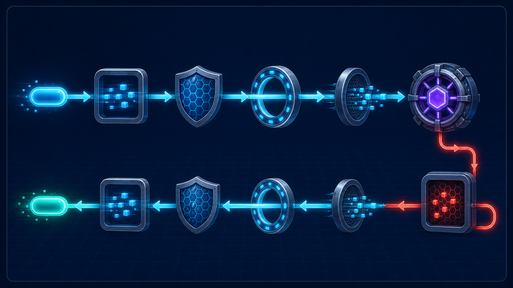

4편 · 61분 — 규칙을 구조로
NodeBird 코드로 익스프레스의 구조적 약점을 보이고, 네스트가 그것을 어떻게 푸는지 본다.
// 이렇게 써야 하지만 router.post('/join', isNotLoggedIn, join); // 순서를 바꿔도 문법 에러 없음 — 동작만 이상해진다 router.post('/join', join, isNotLoggedIn);
미들웨어의 순서·역할이 코드의 규칙이 아니라 머릿속 규칙. 혼자면 OK, 팀이면 사고의 근원.
router.post( '/join', isNotLoggedIn, // 순서 규칙 join, );
@UseGuards(NotLoggedInGuard) @Post('join') join(@Req() req: Request) { // 잘못 쓸 수가 없다 }
부탁(“순서 조심”)이 명찰(@UseGuards)로. 내부적으로 익스프레스를 쓰므로 배운 게 쌓인다.
nest new로 프로젝트 생성컨트롤러·서비스·모듈 3형제 구조를 잡고, 5-4의 로그인 미들웨어를 가드로 재작성한다.
isLoggedIn/isNotLoggedIn을 가드로 재작성 (5-4 회수)@UseGuards로 라우트에 부착기존 미들웨어를 연결하고 .env를 붙이며, 의존성 주입(DI)의 핵심을 잡는다.
@nestjs/config로 .env (5-3 dotenv 회수) + 직접 미들웨어 작성new를 우리가 안 하고 네스트가 대신 해주는 것 = DI. ‘갈아끼우기 쉬운 구조’. 내부 동작은 노트 N-7.”요청 하나가 통과하는 관문들을 그림 한 장으로 정리하고 직접 만들어본다.

이 그림 한 장이 네스트의 전부. 출력해서 모니터에 붙여두세요.
class-validator